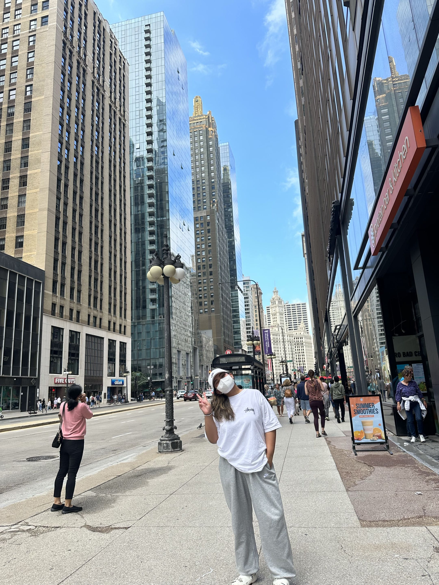

Kate Avrielle Cho
Virginia Beach, VA | 757-277-2067 |
katecho0131@gmail.com

[ Professional Summary ]
Aspiring web developer building foundational skills in HTML, CSS, and
JavaScript through structured training and hands-on projects. Interested
in creating responsive, user-friendly websites while developing
problem-solving skills and growing in front-end development.
[ Technical Skills ]
- Languages: HTML5, CSS, JavaScript (Currently Learning)
- Development Tools: Visual Studio Code, GitHub
-
Web Development: HTML Structure, CSS Styling, Website Layout, Basic
Navigation
-
Additional Skills: Data Entry, Documentation, Microsoft Excel (Basic),
Record Keeping
[ Work Experience ]
-
American Music Guam - Sales Associate | Dededo, Gu
August 2025 - December 2025
-
Guided customers in selecting musical instruments, accessories, and
equipment based on their needs.
-
Developed product knowledge to answer questions and explain product
features.
-
Handled purchases and payment processing using the store's point of
sale system.
-
Assisted with merchandise organization and maintaining store
presentation.
-
Cruz Best - Administrative & Data Entry Assistant | Yigo, Gu
July 2023 - December 2023
-
Recorded inventory, sales, and payment information in company
records.
-
Prepared customer invoices and generated receipts for transactions.
-
Reviewed records to verify information and maintain data accuracy.
-
Updated payment statuses and organized business documentation.
-
Assisted with administrative tasks and general business operations.
-
Jeans Warehouse - Sales Associate | Dededo, Gu
November 2022 - June 2023
-
Helped customers locate clothing and find products that matched
their preferences.
-
Maintained merchandise displays and ensured products were properly
arranged.
-
Restocked sales-floor merchandise and assisted with inventory
organization.
-
Supported daily store operations by maintaining an orderly shopping
environment.
-
Pacific Islands Club - Clubmate | Tumon, Gu
February 2022 - July 2022
-
Supervised pool areas and monitored guest activities to maintain
safety.
- Communicated facility rules and safety guidelines to guests.
-
Responded to guest questions and provided assistance when needed.
[ Education ]
- High School Diploma | George Washington High | 2017-2020
- College Coursework | University of Guam | 2020-2021
[ Professional Development ]
Web Development Training - In Progress
Angela Yu's Web Development Bootcamp
- Studying foundational web development concepts.
- Practicing HTML and CSS through coding exercises and projects.
- Developing familiarity with development tools and workflows.
- Expanding programming knowledge through continued coursework.
Additional Information
- Languages: English
- Authorized to work in the United States